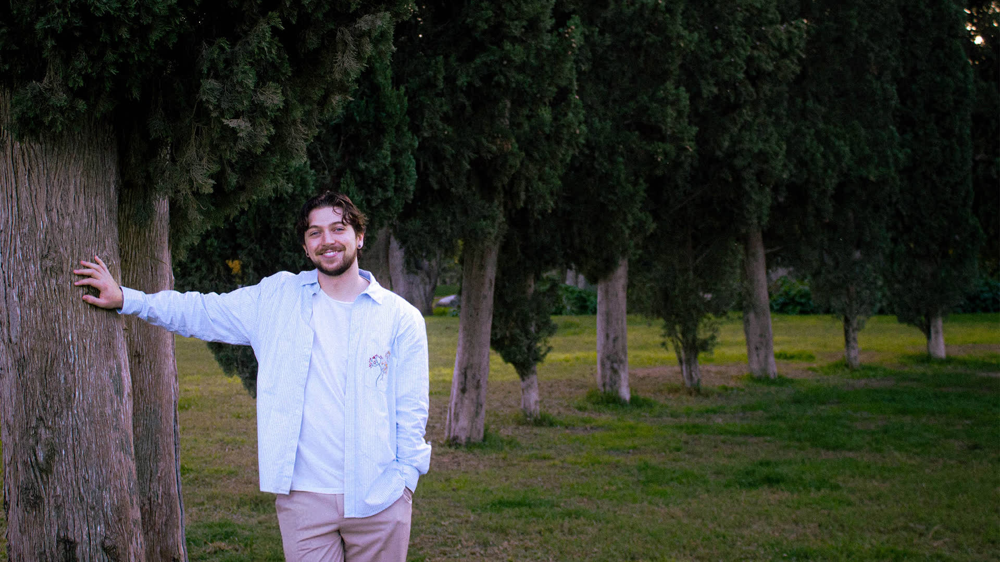

Gustavo Tondin
Valencia - España
Diseñador estratégico
enfocado en darle
autoridad a marcas.
Gustavo Tondin
Soy diseñador gráfico y web con base en Valencia. Llevo más de cinco años en branding, diseño digital y desarrollo web, uniendo estrategia, estética y código.
Mi enfoque: entender qué necesita una marca, darle identidad visual sólida y construir la presencia digital que le respalde. No diseño por decorar. Diseño para que las marcas comuniquen, conecten y crezcan.
He trabajado con startups, negocios y empresas en Brasil y España. Siempre con el mismo principio: cada pieza tiene un porqué.
Entender
Escuchar, analizar y definir dónde empezar.
Diseñar
Explorar soluciones claras y coherentes.
Aplicar
Llevarlo a lo real, con cuidado en los detalles.
Enfoque
Entender antes de diseñar.
Busco claridad, coherencia y propósito en cada proyecto.
No diseño por estética - diseño para que las marcas comuniquen mejor.
Experiencia
Diseñador Gráfico Autónomo
Valencia, España
Brand design y estrategia visual para empresas. Diseño de identidades visuales y gestión integral de proyectos.
Diseñador gráfico & web
Valencia / remoto
Trabajo en branding, diseño digital y desarrollo web, conectando estrategia, estética y ejecución.
Fotógrafo
Caxias do Sul, Brasil
Producción de sesiones fotográficas corporativas, de producto y eventos. Edición y retoque profesional.
Lo que hago
- Identidad visual
- Dirección creativa
- Sistemas de marca
- Diseño editorial
- Web design
Herramientas
Soft Skills
Perfil
- Idiomas: Portugués, español e inglés.
- Intereses: Storytelling, bicicleta, arquitectura, cine.